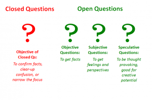

Session Details
- Date: 27th November 2020
- Topic: Assessment and Evaluation
- Resource Person: Dr. Chalinda K. Beneragama
20. Assessment and Evaluation
Topics covered in this session
- What is an Assesment?
- Need of Assessments
- What is Evaluation?
- Types of Evaluation
- What is Effective Questioning in Classroom?
- Benefits of Effective Questioning
- Types of Questions in the Classroom
What is an Assesment?
In education, the term assessment refers to the wide variety of methods or tools that educators use to evaluate, measure, and document the academic readiness, learning progress, skill acquisition, or educational needs of students.
Need of Assessments
- Motivating and directing learning
- Providing feedback to student on their performance
- Providing feedback on instruction and/or the curriculum
- Ensuring standards of progression are met
What is Evaluation?
Evaluation focuses on grades and might reflect classroom components other than course content and mastery level. An evaluation can be used as a final review to gauge the quality of instruction. It’s product-oriented. This means that the main question is: “What’s been learned?” In short, evaluation is judgmental.
Evaluation helps us in the following ways;
- The evaluation results tell us about the effectiveness of the process of education and methods of teaching and learning.
- Evaluation results inform us about the level of attainment of our educational goals at various levels of education i.e. Pre-primary, Lower Primary, Upper Primary, Secondary, Senior Secondary and Higher Level of education.
- Assessment and evaluation findings help in building sound educational programmes.
- Process of evaluation serves as an ‘inbuilt monitor’ within the educational programmes to review the progress in learning at different intervals of time.
- It provides valuable feedback on the design and implementation of the educational programmes.
- Evaluation at classroom and school level fulfills the objectives of finding out the attainment of objectives by students in various domains of educational objectives like cognitive, affective and psychomotor.
- Through the evaluation results of students’ performance, effectiveness of teaching methods, teaching-learning approaches used, use of teaching aids, and overall teaching-learning environment is also judged and improved, if needed.
Types of Evaluation
Formative Evaluation
This is the evaluation which is conducted during the on-going process. In the arena of teaching-learning, this evaluation is done throughout the teaching and learning to make an assessment that the set objectives are being achieved or not
Summative Evaluation
Summative evaluation is conducted at the end of a course, semester, or a class or topic. The purpose of this evaluation is to find out the quality of the final product and to find out the extent to which the instructional objectives have been achieved.

What is Effective Questioning in Classroom?
Effective questioning involves using questions in the classroom to open conversations, inspire deeper intellectual thought, and promote student-to-student interaction. Effective questions focus on eliciting the process, i.e. the ‘how’ and ‘why,’ in a student’s response, as opposed to answers which just detail ‘what.’ Using them in the classroom creates opportunities for students to analyse their own thinking, that of their peers, and their work.
Benefits of Effective Questioning
Using effective questioning in your classroom brings a host of benefits, as it:
- Encourages students to engage with their work and each other.
- Helps students to think out loud.
- Facilitates learning through active discussion.
- Empowers students to feel confident about their ideas.
- Improves speaking and listening skills.
- Builds critical thinking skills.
- Teaches respect for other people’s opinions.
- Helps students to clarify their understanding
- Motivates students and develops an interest of a topic.
- Allows teachers to check students’ understanding.
Types of Questions in the Classroom
Closed Questions
Closed questions are those that prompt a simple response, such as yes, no, or a short answer. Examples include:
- Are you feeling better today?
- Does 6 plus 7 equal 13?
- Did Henry VIII have six wives?
- What is the periodic symbol for potassium?
- Who wrote Macbeth and Romeo and Juliet?
- When was the Battle of the Somme?
There are many advantages to closed questions. They’re quick and easy to respond to and generally reduce confusion. They’re also particularly useful for challenging pupils’ memory and recalling facts.
Open Questions
Open questions, on the other hand, are those that require a deeper level of thinking and often prompt a lengthier response. They ask students to think and reflect, provide opinions and feelings, and take control of the conversation. Examples of some open questions includes:
- What did you think of the ending of Romeo and Juliet?
- How did you interpret the end of the film?
- Explain the importance of the Battle of the Somme.
- Describe the role of insulin in the body.
Open questions are advantageous because they enrich the learning experience by encouraging individual thinking. They also give you, as a teacher, the opportunity to check your pupils’ understanding and knowledge, and assess their ability to apply this knowledge.

